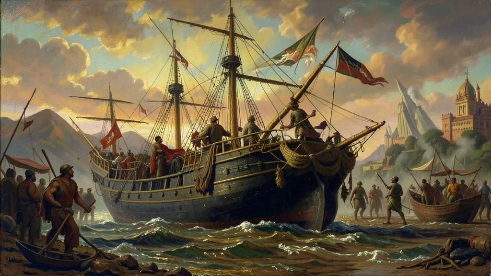
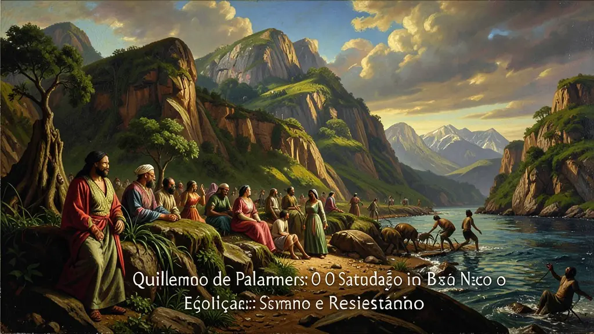
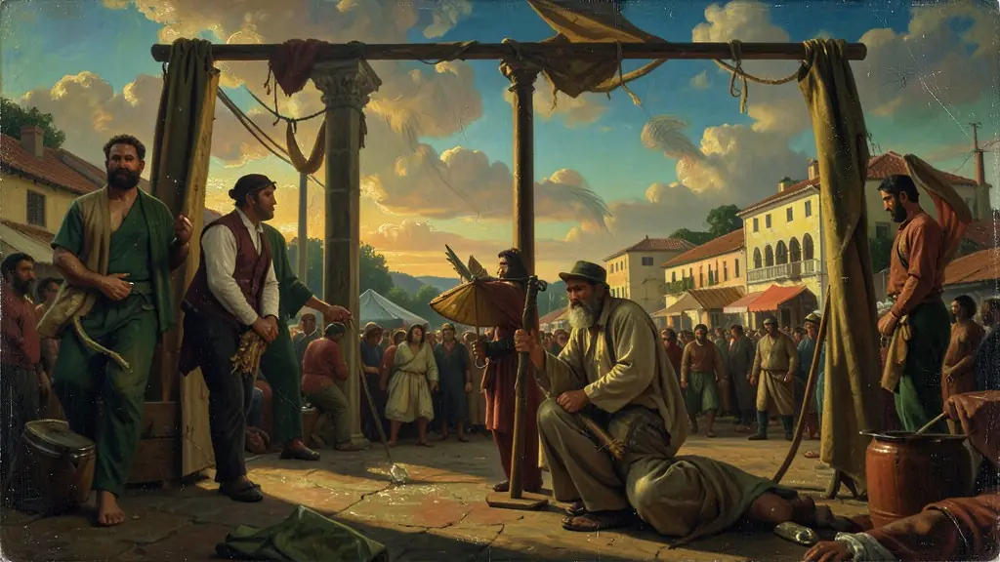

Capítulo 01
1. O Tráfico Transatlântico: O Navio Negreiro
O tráfico foi a atividade comercial mais lucrativa do Império Português. Milhões morriam na travessia (o 'Tumbeiro'). Chegando ao Brasil, as famílias eram separadas nos portos para evitar a organização de revoltas. A escravidão urbana era comum (escravos de ganho), permitindo que negros circulassem pelas cidades prestando serviços, mas sendo obrigados a entregar a maior parte do lucro aos seus senhores.

Capítulo 02
2. Quilombo de Palmares: O Estado Negro
Localizado na Serra da Barriga (AL), Palmares durou quase um século. Sob a liderança de Ganga Zumba e depois Zumbi, abrigou mais de 20 mil pessoas. Não era apenas um refúgio de escravos fugidos, mas uma sociedade com agricultura própria, comércio com vilas vizinhas e uma organização política sofisticada. Sua queda em 1694 exigiu uma megaexpedição comandada pelo bandeirante Domingos Jorge Velho.

Capítulo 03
3. O Movimento Abolicionista: Pressão e Luta
A abolição foi fruto de três pressões: 1) Internacional (Inglaterra em busca de mercado consumidor livre); 2) Popular (campanhas de intelectuais negros como Luís Gama e José do Patrocínio); 3) Rebeldia (fugas em massa nas fazendas de café nos anos 1880). O abolicionismo foi o maior movimento social do século XIX, reunindo poetas (Castro Alves), mulheres e negros libertos.

Capítulo 04
4. Leis Abolicionistas: O 'Para Inglês Ver'
As leis graduais foram estratégias das elites para evitar o caos econômico. A Lei Eusébio de Queirós empurrou o capital do tráfico para as ferrovias e bancos (Mauá). A Lei do Ventre Livre deixava a criança 'livre' mas sob tutela do senhor até os 21 anos (trabalho forçado). A Lei dos Sexagenários libertava quem raramente chegava aos 60 anos pelo desgaste físico extremo do trabalho forçado.
Capítulo 05
5. O Pós-Abolição e o Racismo Estrutural
A Lei Áurea de 13 de maio de 1888 teve apenas dois artigos e zero plano de integração. Sem indenização, sem moradia e sem acesso ao voto (já que o voto para analfabetos era proibido na República que viria logo depois), a população negra foi empurrada para as zonas periféricas e subempregos. O Estado usou o Código Penal para perseguir culturas negras (o samba e a capoeira foram proibidos) até o início do século XX.
A escravidão no Brasil não foi apenas um sistema de trabalho, mas a base sobre a qual se construiu toda a civilização brasileira por mais de trezentos anos. Diferente de outros sistemas coercitivos, o escravismo colonial transformou o ser humano em mercadoria (*res* ou coisa), privando o indivíduo de sua humanidade em prol do lucro da metrópole e dos proprietários locais. Esse 'pecado original' da história brasileira permeia nossas estruturas sociais até hoje, manifestando-se no racismo estrutural e na desigualdade profunda.
As formas de resistência negra foram variadas e constantes, desde o cotidiano de pequenas sabotagens e fugas até a formação de Quilombos, como o de Palmares. Os quilombos não eram apenas locais de refúgio, mas espaços de reconstituição da liberdade e da identidade africana em solo brasileiro. O abolicionismo, que ganhou força no século XIX, foi um movimento heterogêneo que uniu intelectuais negros como Luiz Gama e José do Patrocínio a setores da elite que viam a escravidão como um obstáculo à modernização capitalista do país.
A Lei Áurea (1888), embora celebrada como um ato de benevolência da Princesa Isabel, foi na verdade o resultado de uma pressão insustentável vinda de baixo (revoltas escravas) e de fora (pressão inglesa). No entanto, o fim formal da escravidão não veio acompanhado de políticas de integração do ex-escravizado na sociedade. Sem terra, sem educação e sem direitos políticos, os negros foram empurrados para a marginalidade, um processo que o historiador Jacob Gorender define como a transição do escravismo para um mercado de trabalho livre e excludente.
Fonte: GORENDER, Jacob. O Escravismo Colonial. São Paulo: Ática, 1978.
Atividades interativas
Questões para fixar
A Lei Eusébio de Queirós, promulgada em 1850, proibiu o tráfico negreiro transatlântico. Qual foi uma das principais consequências econômicas imediatas dessa lei no Brasil Império?
O Quilombo de Palmares é frequentemente citado como a principal forma de resistência à escravidão. Por que ele era visto como uma ameaça existencial ao sistema colonial?